Big science and industries of violence
Graham H. Edwards
Earth & Environmental Geosciences
Tautologies for our discussion
- We want science to improve the quality of human life.
- Civilian mass casulaties are bad.
- The Nazi agenda is bad.
Caution
Similar to the assigned readings, you may find some aspects of our discussion unsettling.Look after yourself/selves, as needed.
How I got here…
isotope geochemistry
Isotopes
Atoms of the same element with different masses.
| particle | charge |
|---|---|
| proton | + |
| electron | − |
| neutron | ○ |
 $$^4_2\text{He}$$
$$^4_2\text{He}$$Isotopes
$$^3_2\text{He}$$
$$^4_2\text{He}$$
Isotope fractionation records information!
| Type | Fractionates by... |
|---|---|
| Radiogenic | Radioactive decay |
| Stable | Environmental conditions |
Measuring time
Radioactive Decay
$$\frac{dN}{dt} = -\lambda N$$
$$N = N_o e^{-\lambda t}$$
$$n = N(e^{\lambda t} -1)$$
Half-lifes and the decay constant ($\lambda$)
\[\begin{aligned} t_{1/2} &= \frac{ln(2)}{\lambda} \\\\ \lambda &= \frac{ln(2)}{t_{1/2}}\end{aligned}\]
Radioactive Decay
Uranium-238

The uranium decay series

Uranium-lead (U-Pb) and uranium-series chronometers

Mass spectrometry

X62 thermal ionization mass spectrometer — Keck Isotope Facility, University of California Santa Cruz
The Trinity Shot
1945
The Manhattan Project today …


{kind=link}
{kind=link}
{kind=link}